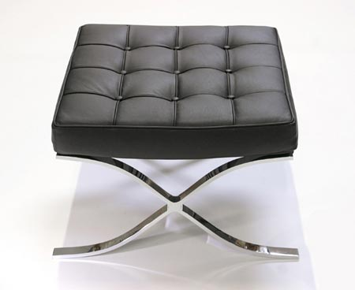
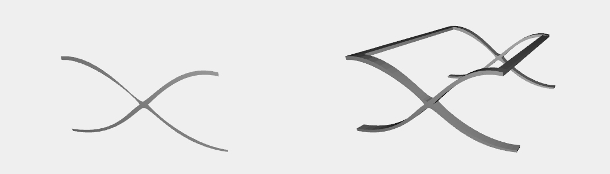
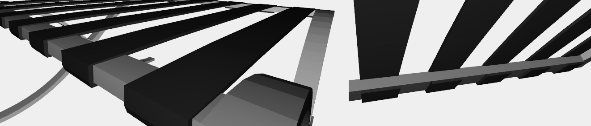
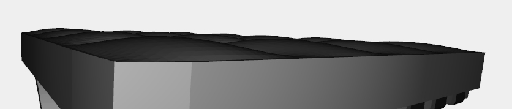
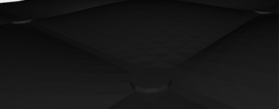
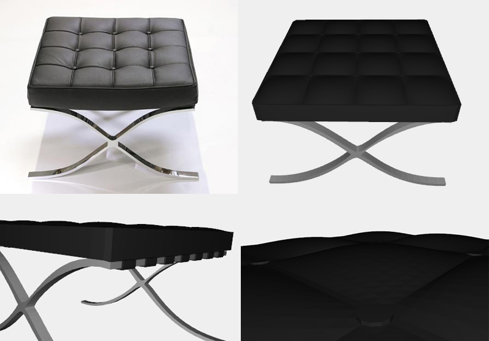

Barcelona Pouf
Legs
The legs are built drawing the curves with sequences of points. Then they are mapped through bs2() function and extruded by ([0.16]). The trasversal bars are extruded by ([2.78]), the distance between the sides legs.
Ropes
To create the ropes that support the pillow we don't need a curve but a broken line is enough. So, after creating the sequences of points, these can be mapped through NUBS(S0)(1)(knots)(points070) - the grade is 1 because we need just a broken line. With the 2 edges created by the points we can obtain the side surface mapping them by Bezier and then extruding them of ([0.22]). The rest of the ropes are generated thanks to REPLICA(7)([rope, T([2])([0.22+0.20])]) function.
Pillow
The base pillow is generated thanks to a second-grade NUBS line. It is Bezier-mapped before with an inside point, creating the first surface; then a 0.3-higher replica of the curve is created, and Bezier-mapped with the first one to create the side surface; the first operation is applied to the second NUBS line to create the upper surface. The stuffed square on the top of the pillow are created Bezier-mapping three sequences of points: two for the edges and the middle one that will be approximated. This is made by the special function bs3() that create the surface by three sequences of points. Then the stuffed square is replicated in the two dimensions to fill the pillow surface.
Details
The pillow buttons are simplest CYLINDER(0.04, 0.01)([12, 1]), replicated and translated properly between the stuffed squares.
Complete model
Legs, ropes, pillow and buttons are structed and the last two coloured with the array passed through the call to the function. The result of the function barcelona_pouf() is a perfect Plasm.js 3D model of the Mies van der Rohe's Barcelona Pouf.
